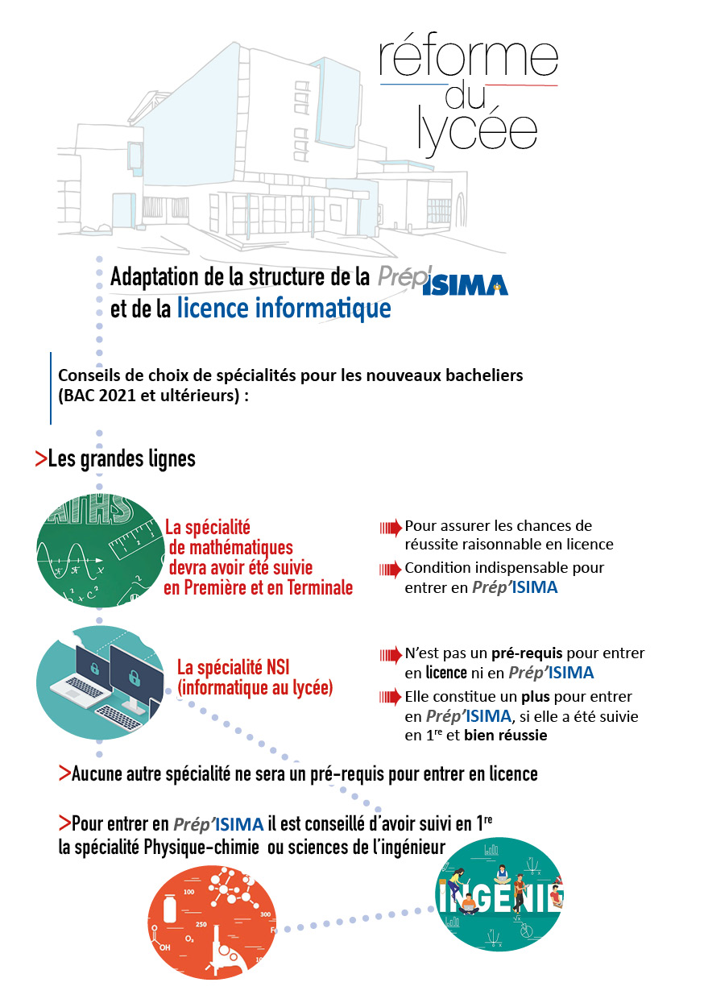

L’ISIMA ouvre ses portes aux lycéens souhaitant devenir ingénieur en
informatique, en proposant 26 places dans un parcours préparatoire post
bac de deux ans, appelé Prép’ISIMA, adossé à l’Université Clermont
Auvergne.
Rentrée
Les étudiants sont accueillis par des réunions de pré-rentrée début
septembre, l’une spécifique à la Prep’ISIMA, l’autre commune avec les
étudiants des Licence de Sciences.
Réunion de rentrée des Prep’ISIMA 1 : mardi 1er septembre 2020 à 9h (salle A002, ISIMA).
Réunion de rentrée complémentaire, commune avec les L1 Sciences : entre le 2 et le 4 septembre 2020.
Début des cours pour les Prep’ISIMA 1 : 9 septembre 2020.
Comment candidater à Prép’ISIMA ?
Sur le portail parcoursup,
dans le moteur de recherche des formations, sélectionnez « Cycle
Universitaire Préparatoire aux Grandes Ecoles » (CUPGE) en région
Rhône-Alpes-Auvergne. Vous trouverez alors le parcours préparatoire
ISIMA.
Depuis quelques années, nous recrutons également des étudiants ayant
brillamment réussi leur année de Licence
1 à l'université Clermont Avergne, dans l’un des deux portails
contenant de l’informatique (Physique/Sciences Pour
l’Ingénieur-Mathématiques-Informatique ou
Mathématique-Informatique-Economie qui seront remplacés par un portail
unique Mathématiques-Informatique à partir de septembre 2021), pour entrer
directement en deuxième année de Prep’ISIMA. La procédure de candidature
est transmise en interne aux étudiants de L1 au mois de juin.
Quelles sont les conditions de recrutement à ce parcours préparatoire ?
La sélection à l’entrée de ce parcours préparatoire est effectuée par
un jury spécifique de l’ISIMA qui étudie les dossiers de candidature
(notes et détails des spécialités suivies pour les classes de première
et terminale, appréciation des enseignants, projet de formation
motivé). Pour les candidats ayant reçu une réponse positive du jury,
l’inscription définitive à ce parcours est conditionnée par l’obtention
effective du Baccalauréat.
Informations Réforme du lycée – Bac 2021 :

Informations Réforme du lycée – Bac 2021
Comment se déroule ce parcours préparatoire ?
Les candidats retenus suivront les enseignements des deux premières
années de la Licence
informatique (L1 et L2) de l’Université Clermont Auvergne avec des
modules spécifiques qui seront dispensés par des enseignants de l’ISIMA.
En première année, les étudiants Prep’ISIMA suivront les cours de L1
dispensés dans le cadre du portail Mathématiques-Informatique (voir le
programme de Licence pour un détail des matières). En deuxième année,
ils suivront les cours de L2 Informatique avec Mineure Mathématiques
avant de se spécialiser complètement sur l’informatique en milieu de
deuxième année.
Les modules spécifiques sont dispensés par l’ISIMA dans ses locaux.
Voici quelques exemples de ces modules (sous réserve de modification) :
Introduction à l’imagerie (12h)
Mathématiques pour l’Ingénieur (12h)
Atelier de développement sous Linux (14h)
Les métiers de l’informatique : des ingénieurs, anciens de l’ISIMA, viennent présenter leur métier (12h)
Modélisation, Résolution, Programmation (30h)
Réalité Virtuelle (30h)
Projet (30h)
Les étudiants de ce parcours bénéficient d’un accompagnement
personnalisé par l’intermédiaire de l’enseignant de l’ISIMA
responsable de la Prép’ISIMA.
Les plus de la formation
Un accès privilégié à l’ISIMA : Les étudiants de ce parcours seront
intégrés, de droit, à l’ISIMA (en première année du cycle ingénieur),
sous réserve d’avoir validé, en deux ans et en première session, les
deux années de licence et chacun des modules à l’intérieur des Unités
d’Enseignement (UE) spécifiques du parcours Prép’ISIMA.
Accès aux associations de l’ISIMA
Les étudiants de ce parcours ont accès aux associations d’étudiants de
l’ISIMA, ainsi qu’aux événements de l’école.
Frais de scolarité
Les frais de scolarité sont composés des frais d’inscription en Licence
universitaire auxquels s’ajoutent 70 euros supplémentaires
correspondant au parcours préparatoire spécifique à l’ISIMA.
Pour rappel, les frais d’inscription en Licence sont fixés au niveau
national et sont composés de :
170€ (montant pour 2019-2020, à confirmer pour 2020-2021) ainsi que 92 € pour la Contribution de vie
étudiante
et de campus (CVEC)
Les étudiants boursiers sont exonérés de tous les frais d’inscription, y compris la CVEC.